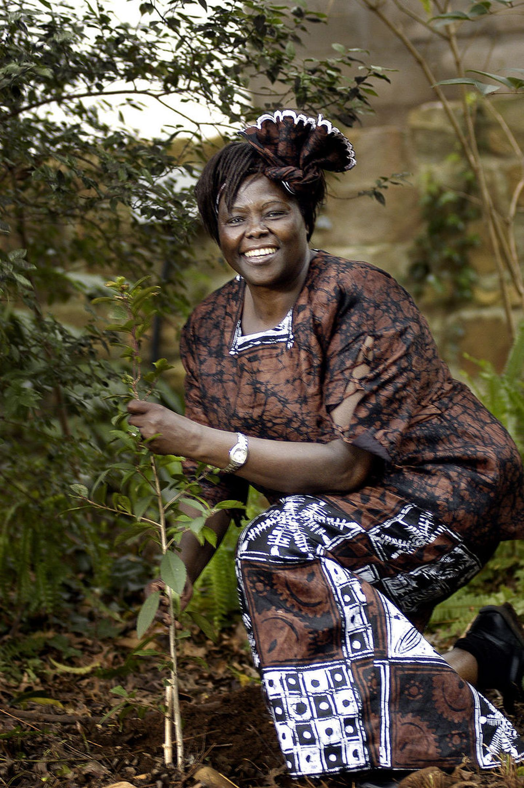
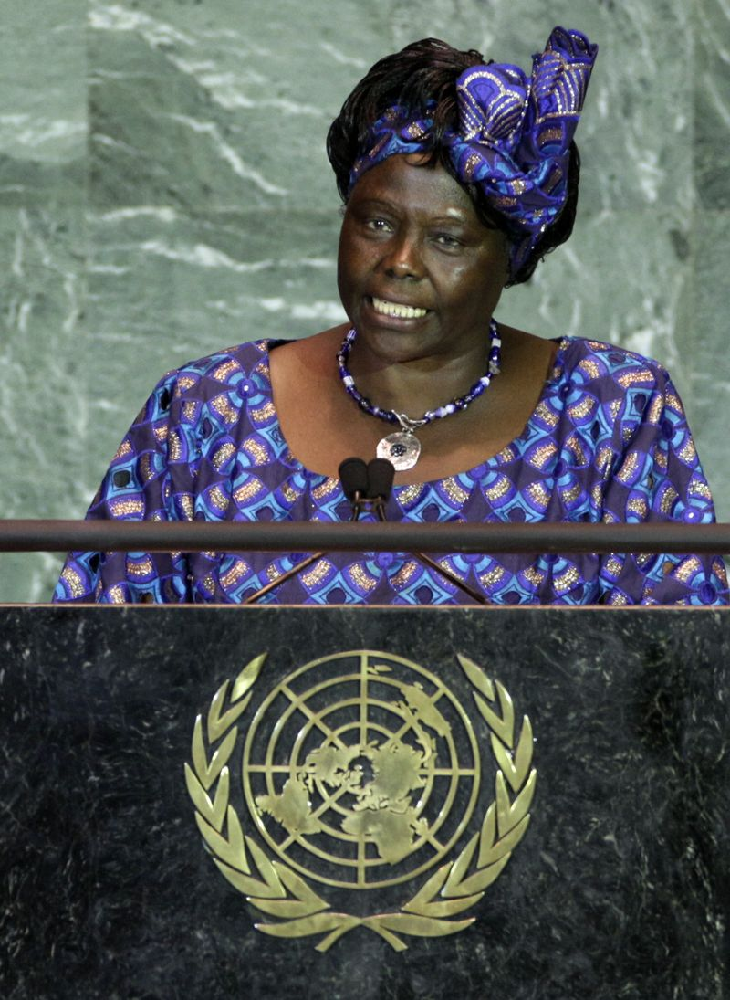
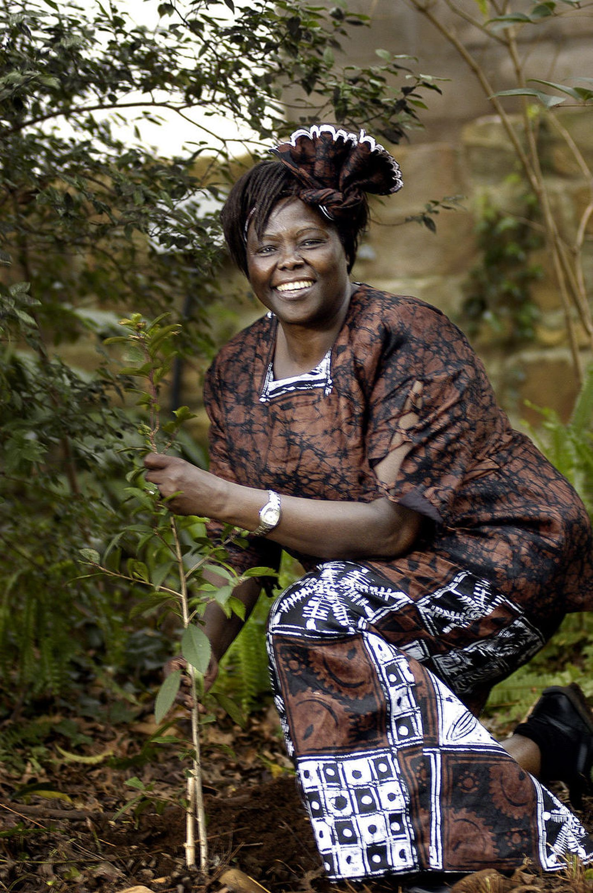
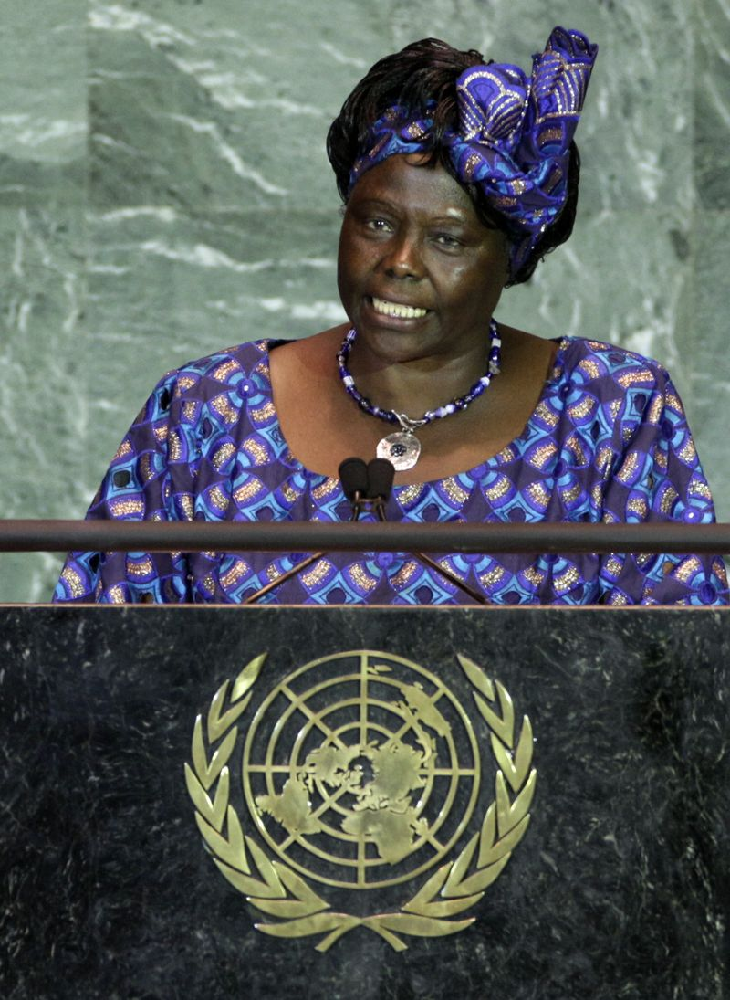
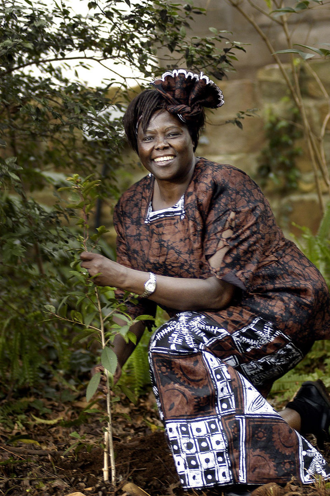
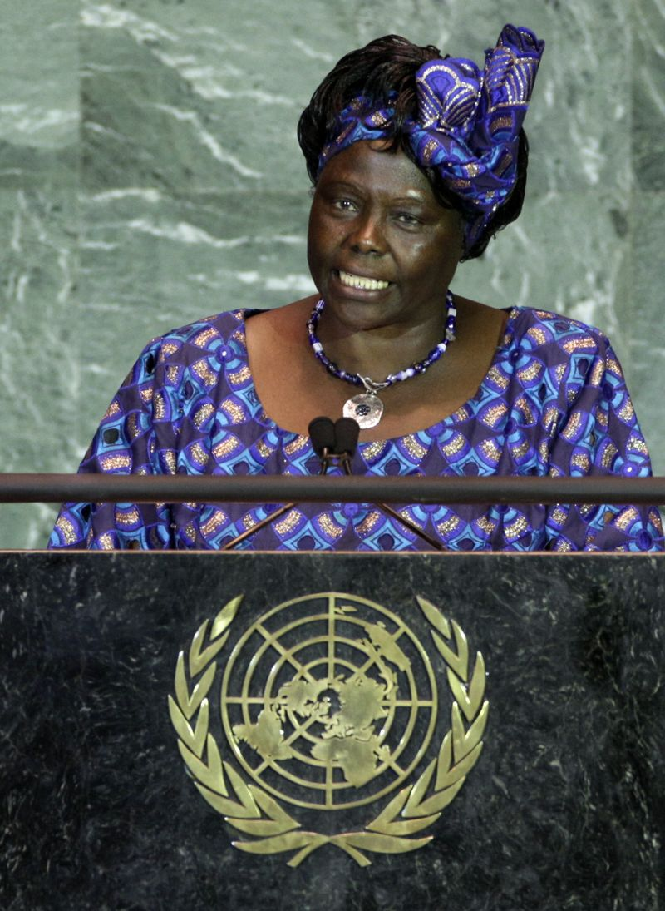

The woman who created a green belt around the Africa


(1) and (2) Dr. Maathai doing tree planting work, (3) Dr. Maathai speaking at UN conference.
Here is a time line of Dr. Maathai's life:
1940 - Born in the village of Ihithe, Nyeri District, in
the central highlands of the colony of Kenya.
1956 - Rated first in her class, and was granted admission
to the only Catholic high school for girls in Kenya, Loreto High School in Limuru.
1960 - Became one of some 300 Kenyans selected to study in the United States through
the Airlift Kenya program.
1966 - Received Masters of Science in biological sciences, and was appointed to a
position as research assistant to a professor of zoology at University College of Nairobi.
1971 - Completed dissertation on the development and differentiation of gonads in bovines.
1974 - Found Envirocare Ltd., a business that involved the planting of trees to conserve
the environment, involving ordinary people in the process.
1976 - Attended the first UN conference on human settlements, known as Habitat I through UNEP.
1977 - Started the first "Green Belt", which was first known as the "Save the Land Harambee"
and then became the Green Belt Movement.
2002 - Won in Tetu Constituency with an overwhelming 98% of the vote.
2004 - Awarded the 2004 Nobel Peace Prize for her "contribution to sustainable development,
democracy and peace".
2005 - Elected the first president of the African Union's Economic, Social and Cultural Council.
2006 - Awarded an honorary doctorate by and gave the commencement address at Connecticut College.
2009 - Published "The Challenge for Africa" with her insights into the strengths and weaknesses
of governance in Africa, her own experiences, and the centrality of environmental protection to
Africa's future.
2011 - Died at the age of 71.
"Maathai stood up courageously against the former oppressive regime in Kenya. Her unique forms of action
have contributed to drawing attention to political oppression – nationally and internationally. She has
served as inspiration for many in the fight for democratic rights and has especially encouraged women to
better their situation."
-- The Norwegian Nobel Committee
Dr. Maathai in a nutshell
Dr. Maathai and then U.S. Senator Barack Obama in Nairobi in 2006
Born
Wangari Muta
1 April 1940
Ihithe village, Tetu division, Nyeri District, Kenya (then known as Nyeri, Kenya Colony)
Died
25 September 2011 (aged 71)
Nairobi, Kenya
Alma mater
University of Nairobi (PhD)
University of Pittsburgh (MS)
Benedictine College (BS)
University of Giessen
OccupationEnvironmentalist, political activist, writer
Known forGreen Belt Movement
ChildrenWanjira Maathai
Awards
Right Livelihood Award (1984)
Nobel Peace Prize (2004)
Indira Gandhi Peace Prize (2006)
 


